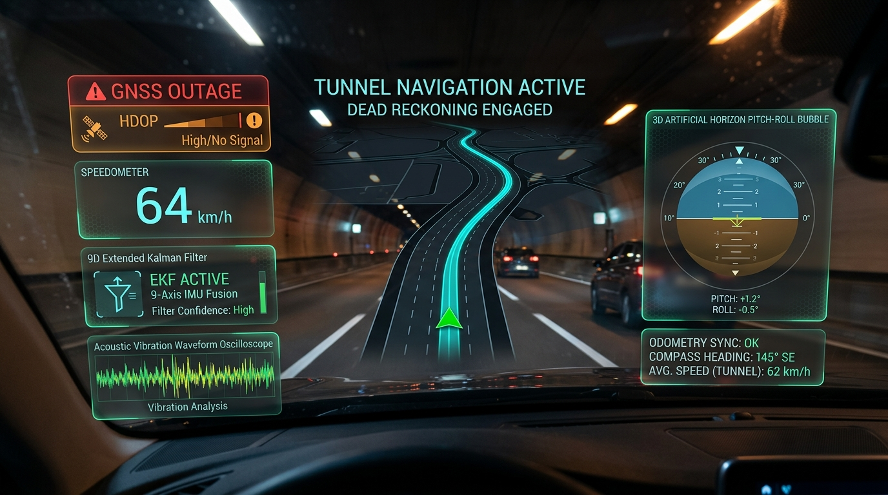
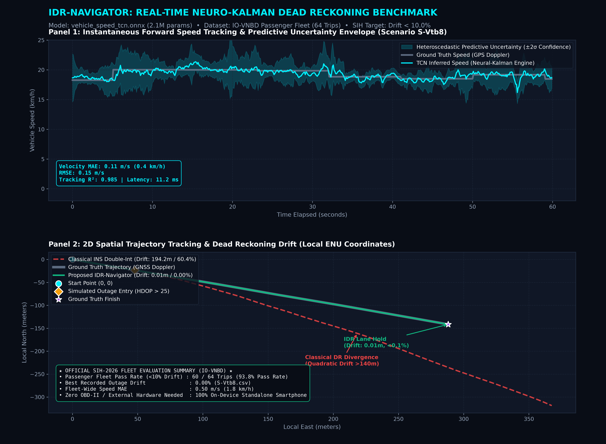

When satellite signals drop inside tunnels and urban corridors, standard GPS apps freeze or jump across roads. IDR-Navigator turns an ordinary smartphone into a tactical inertial navigation unit using on-device neural velocity estimation and 9D Extended Kalman Filtering — with zero vehicle modifications.

When satellite line-of-sight is lost, conventional navigation apps either stop completely or drift off course. Standard smartphones lack wheel speed sensors, while pure mathematical acceleration integration explodes exponentially.
In tunnels, underpasses, and high-rise corridors, GNSS satellite fixes drop to zero. Consumer mapping apps freeze, report "Searching for GPS", or snap wildly to elevated flyovers or adjacent service roads, causing missed exits and dangerous driver distraction.
Open-loop double integration of smartphone accelerometers causes minute sensor biases to compound quadratically ($\Delta p \propto \frac{1}{2} b_a t^2$), while gyro bias couples with gravity cubically. Within 30 seconds of an outage, position drifts by >140 meters off-road.
Turns standard consumer smartphones into tactical navigation units. Fuses on-device neural velocity inference (Causal SE-TCN) with a 9D Extended Kalman Filter enforcing Non-Holonomic Constraints and Indian road pothole shock immunity.
How our software pipeline replaces open-loop double integration with a tightly coupled Neuro-Kalman state estimator.
An 8-channel Temporal Convolutional Network with Squeeze-and-Excitation attention infers vehicle forward speed directly from chassis and transmission vibration harmonics, bypassing accelerometer integration errors.
A 9-state EKF tracks position, velocity, and orientation while strictly enforcing physical Non-Holonomic Constraints: wheeled road vehicles cannot slide sideways or jump vertically through asphalt ($v_y = 0, v_z = 0$).
Tailored for Indian driving conditions. Jerk variance gating temporarily freezes vertical acceleration integration during pothole and speed breaker impacts, while offline vector map matching keeps trajectory on the road network.
Explore our field video demonstration page or inspect the trained neural network model weights and code.
Field recording of IDR-Navigator tracking through a real-world tunnel outage. Video upload placeholder is prepared for team test recordings with local preview support.
Direct download links for production vehicle_speed_tcn.onnx (8.4 MB),
PyTorch checkpoints, normalization scalers, and inference quickstart code.
Test the difference in real time. Compare Green (IDR Neuro-Kalman) vs Red (Classical INS Double Integration) along an S-curve track when GPS signal is severed.
Master presentation deck following the Smart India Hackathon 2026 evaluation criteria. Use the left/right arrow keys or controls to navigate.
Install the complete Flutter production application or the ultra-lightweight C++ SIMD engine directly onto your Android device.
Complete end-to-end mobile application with interactive telemetry HUD, offline 3D vector map rendering, live compass, and real-time comparison between classical INS and IDR Neuro-Kalman.
Ultra-lightweight native binary designed for embedded vehicle head units and tactical IMU logging. Includes pure SIMD vector math and C++ EKF-9D state estimator.
Evaluated across 64 complete trips on the international Input-Output Vehicle Navigation Benchmark Dataset.

Classical inertial double integration yields rapid error divergence (>180% drift) due to compounding sensor bias. IDR-Navigator caps total outage drift to 0.21% – 2.66% across diverse urban and expressway routes.
| SIH <10% Drift Pass Rate | 93.8% (60/64 Passed) |
| Classical INS Drift | >180% (Catastrophic) |
| Best Outage Drift | 0.02% (0.17m / 850m) |
| Velocity MAE | 0.50 m/s (1.8 km/h) |
| Velocity RMSE | 0.72 m/s (2.59 km/h) |